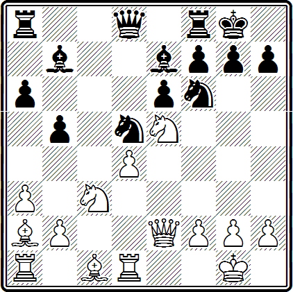

Изолированная пешка в центре! Сколько горячих споров вызывала когда-то эта проблема, сколько партий было сыграно, в которых противники отстаивали противоположные взгляды! В разыгрывании спорных позиций накоплен огромный опыт, и мы попробуем разобраться в круге вопросов, связанных с центральной изолированной пешкой. Они и сейчас волнуют многих шахматистов.
Сделаем несколько предварительных замечаний. Пешку называют изолированной, если на соседних с ней вертикалях нет пешек того же цвета. Мы будем рассматривать случаи, когда такая изолированная пешка образуется на одном из центральных полей, то есть d4, е4, d5, е5. Вот несколько примеров.
Французская защита. 1. е2—е4 е7—е6 2. d2—d4 d7-d5 3. Kb1—d2 c7—c5 4. e4:d5 e6:d5 5. Cf1—b5+ Kb8—c6 6. Kg1—f3 Kg8—f6 7. 0—0 Cf8—e7 8. d4:c5 Ce7:c5.
У черных изолирована пешка d5.
Сицилианская защита. 1. е2—е4 с7—с5 2. Kg1—f3 е7—е6 3. d2—d4 d7—d5 4. e4:d5 е6:d5 5. d4:c5 Cf8:c5.
У черных изолирована пешка d5.
Испанская партия. 1. е2—е4 е7—е5 2. Kg1—f3 Кb8—с6 3. Cf1—b5 а7—а6 4. Cb5—а4 d7—d6 5. 0—0 Сс8—d7 6. с2—с3 g7—g6 7. d2—d4 Cf8—g7 8. d4:e5 Kc6:e5 9. Kf3:e5 d6:e5 10. f2—f4 e5:f4 11. Cc1:f4.
У белых изолирована пешка е4.
Итальянская партия. 1. е2—е4 е7—е5 2. Kg1—f3 Кb8—с6 3. Cf1—с4 Cf8—с5 4. с2—с3 Kg8—f6 5. d2—d4 e5:d4 6. c3:d4 Cc5—b4+ 7. Ce1—d2 Cb4:d2+ 8. Kb1:d2 d7—d5 9. e4:d5 Kf6:d5.
У белых изолирована пешка d4.
Ферзевый гамбит (Защита Тарраша). 1. d2—d4 d7—d5 2. c2—c4 e7—e6 3. Kb1—c3 c7—c5 4. c4:d5 е6:d5 5. Kg1—f3 Kb8—с6 6. g2—g3 Kg8—f6 7. Cf1—g2 Cf8—e7 8. 0—0 0—0 9. d4:c5 Ce7:c5.
У черных изолирована пешка d5.
Принятый ферзевый гамбит. 1. d2—d4 d7—d5 2. c2—c4 d5:c4 3. Kgl—f3 Kg8—f6 4. e2—е3 e7—е6 5. Cf1:c4 c7—c5 6. 0—0 c5:d4 7. e3:d4.
У белых изолирована пешка d4.
Опыт говорит, что в дебюте чаще образуется ферзевая изолированная пешка (на d4 у белых или на d5 у черных). Поэтому в дальнейшем мы и будем рассматривать именно такие случаи.
Изолированная пешка становится слабостью, если противник, напав на нее, скуёт наши фигуры обязанностью защиты. Слабость изолированной пешки особенно неприятна, если эта пешка центральная. В самом деле, развивая давление на центральную изолированную пешку, противник берет под обстрел и другие центральные поля, фигуры активной стороны нередко занимают при этом сильные центральные позиции, и, следовательно, он оказывает давление на все наше расположение. Кроме того, нужно иметь в виду, что потеря именно центральной пешки очень чувствительна и часто бывает роковой.
Приведем два примера, иллюстрирующие слабость такой пешки. В обоих примерах пешка гибнет не из-за прямого на нее нападения, допустим четырехкратного, при защите ее только тремя фигурами, а потому, что защита пешки фигурами не вполне надежна. В обоих примерах черным удалось выиграть центральную изолированную пешку, используя тактические угрозы, и это несмотря на то, что белые ее многократно защищали.
В партии Холмов — Глигорич (Москва, 1947 г.) белые пассивно разыграли дебют, сами пошли на изоляцию пешки d4, а, попав в худшее положение, играли неточно.
В результате получилась следующая позиция.
Черные ближайшими ходами усиливают давление на пешку d4.
24. . . . Kd5—е7
25. Kc1—е2 Лс7—d7
26. Лd1—d3 Ке7—f5
27. Лf1—d1
Центральная пешка d4, правда, слаба, и ее необходимо защищать, но имеющий изолированную пешку должен быть готов к этому. Кажется, особых неприятностей не предвидится, однако следующий ход черных показывает, что это не так. Последовало:
27. . . . Kf5:d4!
28. Ке2:d4 Лd7:d4
29. Лd3:d4 Лd8:d4
30. Лd1:d4 Фа5—e1+
31. Kpg1—h2 Фе1—e5+
32. Фb3—g3 Фе5:d4
Черные выиграли пешку, а впоследствии и партию.
Эта позиция возникла в партии Гоглидзе — Лисицын (Москва, 1931 г.).
— Неужели и здесь теряется пешка? — может спросить читатель. Да, теряется. После сделанного черными хода
19. . . . Фd5—d6
выясняется, что белые не могут ее защитить.
20. h2—h3 . . .
Угрожало 20... С:f3 21. Ф:f3 Ф:d4. В. Созин приводит такой вариант: 20. Ке1 Лс4 21. Кс2 Фе6 22. Ке3 Лс1!, и черные выигрывают.
20. . . . Сb7:f3.
21. Фf4:f3 Фd6—b4
22. Ле6—g5 Лd8:d4.
У черных выигрышная позиция.
В обоих приведенных примерах изолированная пешка не могла двигаться: поле перед ней (d5) находилось под обстрелом неприятельских фигур.
Отметим важную особенность. Обычно бывает выгодно поставить свою фигуру перед изолированной пешкой противника (такой прием называют «блокадой»). Во-первых, блокада пресекает возможность движения пешки, и, во-вторых, блокирующая фигура в этом случае расположена очень удачно: она находится в центре и не может быть атакована неприятельской пешкой, а также и тяжелой фигурой противника по вертикали.
Эта позиция возникла в партии Глигорич — Эйве (Цюрих, 1953 г.). Черные теряют изолированную пешку d5: если ее защитит ферзь (30... Фа3—b3, или 30... Фа3—с5, или 30... Фа3—d6), белые играют 31. е3—е4.
Центральная черная пешка блокирована и поэтому не может быть продвинута в ответ на е3—е4.
Типичная позиция!
Остановимся теперь подробнее на вопросе подвижности центральной изолированной пешки.
На следующей диаграмме — типичная пешечная структура.
Почти всегда желательно обладать возможностью продвижения изолированной пешки. Это объясняется несколькими причинами.
Предположим, что противник оказывает на нее сильное давление. Приходится привлекать фигуры для защиты. В этом случае, если черным удается осуществить продвижение d5—d4, они смогут разменять изолированную пешку и таким образом избавиться от слабости. Часто продвижение осуществляют, имея в виду не только эту скромную цель, а с гораздо более активными намерениями: стеснить противника, открыть диагональ а8—h1, освободить поле d5 для своих фигур.
Несколько десятилетий назад сторонники центральной изолированной пешки возлагали большие надежды на такое продвижение. Они охотно шли на соответствующие дебютные варианты и хотя частенько «мучились», но не унывали, терпеливо «отсиживались», лелея надежду на энергичное продвижение. Осуществив такое продвижение, иногда им действительно удавалось выиграть в «разносном» стиле, но часто дело кончалось разменами и мирным исходом.
Обобщая опыт разыгрывания позиций с изолированной пешкой, мы приходим к определенным выводам.
Пешку выгодно продвигать в тех случаях, когда имеется перевес в развитии, либо фигуры расположены более активно, чем у противника, или удается активизировать свои фигуры непосредственно вслед за продвижением пешки. Выгодно бывает продвижение также как средство избавления от слабости.
Таким образом при пешечной структуре, изображенной на диаграмме, продвижение d5—d4 почти всегда выгодно, если его можно осуществить без потери пешки. Ведь часто после размена е3:d4 на поле d4 оказывается фигура черных.
Рассмотрим теперь несколько иную пешечную структуру, когда белая пешка стоит не на е3, а на е2.
Здесь продвижение d5— d4 не ведет к размену пешки и поэтому не годится как средство избавления от слабости, но часто оно остается выгодным при лучшем развитии или более активном расположении фигур черных. Нельзя забывать все же, что, и продвинувшись на d4, пешка может быть слабой.
Приведем несколько примеров, иллюстрирующих эти выводы.
Ферзевый гамбит
Бернштейн Шпильман
Остенде, 1906 г.
Белые допустили продвижение d5—d4 в самом начале партии, в дальнейшем позволили черным опередить себя в развитии. В результате они попали в стесненное положение и их король застрял в центре.
1. d2—d4 d7—d5
2. c2—c4 e7—e6
3. Kbl—c3 c7—c5
Защита Тарраша в начале столетия широко применялась в турнирной практике. Эта защита ведет к изоляции ферзевой пешки черных.
Постепенно за белых были найдены хорошие пути развития. Кроме того, с годами техника игры улучшилась, шахматисты научились выявлять и использовать малозаметные недостатки. Сейчас в турнирах мастеров защита Тарраша применяется сравнительно редко. С современной точки зрения, игра белых в этой партии очень несовершенна.
4. с4:d5 е6:d5
5. d4:с5
Это не лучший ход, черные получают теперь инициативную игру.
5. . . . d5—d4
Здесь продвижение изолированной пешки, безусловно, очень уместно.
6. Кс3—а4 . . .
Сильнее 6. Ке4, хотя черные могли бы сыграть 6... Cf5, после чего их позиция была бы предпочтительнее.
6. . . . Cf8:с5
Теперь черные оказываются не на высоте. В то время еще не был известен ход 6... b5!, который сейчас считается сильнейшим. Вот примерное продолжение, впрочем, не обязательное для белых: 7. cb ab 8. е3 Cd7 9. b3 Kf6 10. Ф:d4 Kc6 11. Ф:b6 Сb4+ 12. Cd2 С:d2+ 13. Кр:d2.
Это положение приводили в свое время различные авторы (Боголюбов, Тартаковер, Ненароков), и все указывали, что после 13... Фе7 с последующей рокировкой черные получают сильную атаку. Никто из них не замечал простого продолжения 13... Ке4+ и 14... Фf6, и белым пора сдаться. Это было указано лет двадцать пять назад московским шахматистом А. Скепнером. Один из многих курьезов в дебютной теории!
7. Ка4:с5 Фd8—а5+
8. Фd1—d2 . . .
Вряд ли кто-нибудь из современных мастеров избрал бы этот ход. Необходимо было как можно быстрее развивать фигуры, ведь с пешкой d4 шутки плохи! Правильно 8. Cd2.
8. . . . Фа5:с5
9. b2—b4 Фс5—Ь6
10. Сс1—b2 Кb8—с6
11. а2—а3 Сс8—е6
12. Kg1—f3 Ла8—d8
Белые отстали в развитии, и им теперь следовало позаботиться о том, чтобы вывести белопольного слона и сделать рокировку (13. g3). Вместо этого они предпринимают «набег», который только подчеркивает сильную позицию черных фигур.
13. Фd2—g5? Kg8—f6!
В таких положениях не считаются с потерей пешки. У черных получается колоссальный перевес в развитии.
14. Фg5:g7 Кре8—е7
15. Фg7—h6 Лh8—g8
16. Ла1—d1
Тарраш рекомендует за белых 16. Фс1 с угрозой Фс5+ и с намерением сыграть g2—g3 и Cg2. Однако после 16... Ке4 (17. g3 d3) белым плохо.
16. . . . а7—а5
17. Фh6—d2 Kf6—е4
18. Фd2—с2 f7—f5
19. b4:а5 . . .
Тарраш ошибается, полагая, что белые могли играть 19. g3 ab 20. Cg2. Например: 20... К:f2 21. Кр:f2 d3+. У черных совершенно подавляющая позиция, и к выигрышу ведет много путей.
19. . . . Фb6:а5+
20. Кf3—d2 Кc6—е5
21. Cb2—c1 Лd8—d6
22. f2—f3 Ке4—с3
23. g2—g3 Лd6—Ь6
24. Kpe1—f2 Лg8—с8
25. Kpf2—g1 Кс3:e2+
Белые сдались.
Болеславский — Котов
Цюрих, 1953 г.
Белые опередили черных в развитии, обе их ладьи стоят на центральных вертикалях. Поэтому неудивительно, что движение изолированной пешки и вскрытие игры оказывается в их пользу.
14. d4—d5 Ка5:b3
Единственный приемлемый ход.
15. d5:е6 Фd6—е6
И после 15... C:f3 16. Ф:f3 положение белых лучше.
16. а2:b3 f7:е6
17. Kf3—d4
Это сильнее, чем 17. Ф:е6+ Ф:е6 18. Л:е6 С:f3 19. gf, и у белых пять (!) изолированных пешек.
17. . . . Се7—d6
18. Фе2:е6+
Белые выиграли пешку и не дают черным получить активную контригру.
18. . . . Kpg8—h8
19. Kd4—f3 Ла8—d8
На 19... C:f3 последовало бы, конечно, 20. Л:d6.
20. Cg5—f4
Белые стремятся к упрощениям.
20. . . . Сb7:f3
21. Лd1:d6 Лd8:d6
22. Фе6:d6 Фb6:d6
23. Cf4:d6 Лf8—е8
24. Ле1:е8+ Kf6:е8+
25. Cd6—е5.
И с лишней пешкой белые выиграли эндшпиль.
В закрытых позициях можно существенно опередить противника в развитии и все же стоять хуже. Более того, это относится не только к закрытым позициям.
Приведем пример.
Это положение получилось в партии Яновский — Ласкер (1910 г.). Белые, так же как и в предыдущем примере, опередили противника в развитии, однако позиция черных лучше. В чем же дело? Да в том, что изолированная пешка надежно заблокирована, слон на Ь2 стоит неудачно, пункт Ь4 слаб. Черным удается использовать эти обстоятельства.
18. . . . Се7—b4
19. Ле1—е2 Ла8—с8
20. f2—f4 Лс8—с7
21. f4—f5
Этот ход приводит к материальным потерям, но, вероятно, Яновский его сделал, не видя, каким образом можно планомерно создать атаку. Возможно было 21. С:d5 Ф:d5 22. Лd3.
21. . . . h7—h5
Отличный контрудар. Если ферзь отступает на g3, то черные могут просто взять пешку f5.
22. Фg4:h5 Kd6—f4
23. Фh5—g4 Kf4:e2+
24. Фg4:e2 e6:f5
У черных значительный материальный перевес. Отчаянная атака белых обречена на неудачу. При этом лена роль ключевого пункта d5, который все время находится в руках черных.
25. Фе2—h5 Cb7—d5
26. Лd1—d3 f7—f6
27. Лd3—h3 f6:e5
28. Фh5—h7+ Kpg8—f7
29. Фh7:f5+ Kpf7—e8
30. Фf5—h5+ Cd5—f7
31. Фh5:е5+ Фd8—e7
Белые сдались.
Итак, о позиции на диаграмме из партии Болеславский — Котов можно сказать, что перевес белых в развитии выявился лишь благодаря возможности продвинуть изолированную пешку и вскрыть игру.
Рассмотрим теперь пример, когда продвижение изолированной пешки является необходимым как средство избавления от слабости. Если фигуры противников одинаково активны, оно обычно ведет к размену и уравнению.
Флор — Эм. Ласкер
Москва, 1935 г.
Несмотря на то, что фигуры черных занимают хорошие позиции, они должны стремиться продвинуть пешку d5 на d4 и довольствоваться упрощениями, в противном случае эта пешка может легко стать слабой. Как указано И. Рабиновичем в турнирном сборнике, в позиции на диаграмме Ласкер мог пойти на продолжение 22... С:с3 23. Л:с3 d4 24. Л:с6 Л:с6 25. С:с6 Ф:с6 26. ed Фс4 и уравнять партию. Однако Ласкер предпочел отступить слоном на b6. Вопреки мнению И. Рабиновича, этот ход не является ошибкой: черные сохраняют возможность продвижения d5—d4.
22. . . . Cd4—b6
23. Фd1—b3
Очевидно, с намерением после Лfd1 усилить давление на пешку d5, но ...
23. . . . d5—d4!
Теперь неизбежны размены.
24. Фb3:е6 f7:е6
25. е3:d4 Кс6:d4
26. Лс1—e1 b5—b4
27. Сс3:d4 Сb6:d4
28. Ле1—е2 еб—е5
29. b2—b3.
Ничья.
Посмотрим, действительно ли, как это утверждает И. Рабинович в сборнике партий II Международного турнира, ход 23. Фh5 давал белым шансы на выигрыш. После 23... Лс7 (угрожало 24. Ch3) 24. Лfd1 d4! 25. С:d4 К:d4 26. Л:с7 черные могут сыграть 26... g6! Этот ход, видимо, не был замечен комментатором На 27. Ф:h6 (27. ФhЗ, 27. Фh4) черные отвечают 27... Ке2+ с преимуществом, а после 27. Л:d4! Л:d4 игра уравнивается.
Ферзевый гамбит
Эм. Ласкер Тарраш
Петербург, 1914 г.
1. d2—d4 d7—d5
2. Kg1—f3 c7—c5
3. c2—c4 e7—е6
Тарраш играет «защиту Тарраша». Однако надо сказать, что уже тогда были найдены хорошие возражения против этой защиты.
В этой известной партии Ласкер продемонстрировал, что если у черных нет существенного перевеса в развитии, то их продвинутая на d4 пешка, при положении белой пешки е2, вовсе не опасна белым и легко может стать такой же слабостью, как и на d5.
4. с4:d5 е6:d5
5. g2—g3 Кb8—с6
6. Cf1—g2 Kg8—f6
7. 0—0 Cf8—е7
8. d4:c5 Ce7:c5
9. Kbl—d2 d5—d4
Ласкер не препятствовал пешке стать на d4 и в дальнейшем преследует две цели: не дать ей продвинуться еще дальше, исключая возможность размена, и расшатать позиции черных фигур, защищающих пешку.
10. Kd2—b3 Сс5—b6
11. Фd1—d3! Сс8—е6
12. Лf1—d1 Се6:b3
Иначе погибла бы осажденная пешка.
13. Фd3:b3 Фd8—е7
14. Cс1—d2 0—0
15. a2—a4!
Цель хода — сделать неустойчивыми позиции черных фигур, защищающих пешку d4.
15. . . . Kf6—е4
16 Cd2—e1 Ла8—d8
17. а4—а5! Сb6—с5
18. а5—а6! b7:а6
Если 18... b6, то позиция слона на с5 становится неудобной, так как после Фа4 (Фb5) возникает угроза b2—b4. Однако после хода в партии лишаются поддержки и конь и слон.
19. Ла1—c1 Лd8—с8
20. Kf3—h4
Угрожая просто выиграть фигуру (21. С:е4).
20. . . . Сс5—b6
После этого черные проигрывают качество. Сравнительно лучше было 20... Kf6, но и тогда у них оставалось много трудностей.
21. Kh4—f5 Фе7—е5
22. Cg2:е4 Фе5:е4
23. Kf5—d6
Белые реализовали свой перевес.
Предположим, что центральная изолированная пешка не может продвигаться. Должна ли она неизбежно стать слабой, как в партиях Холмов—Глигорич, Гоглидзе—Лисицын? Конечно, нет. Ведь у нее есть и достоинства. Она облегчает занятие важных пунктов, например: пешка d4 у белых — пунктов е5 и с5. Кроме того, соседние вертикали открыты для ладей.
Практика показала, что положительные стороны центральной изолированной пешки иногда удается использовать для атаки. Во всяком случае к этому нужно стремиться.
Защищающаяся сторона чаще всего должна искать упрощений, разменов, чтобы ослабить атаку. Кроме того, чем ближе к эндшпилю, тем слабее обычно становится изолированная пешка. Эти моменты ярко отражены в следующих примерах.
Полугаевский — Антошин
Ленинград, 1956 г.
Одна из типичных позиций с центральной изолированной пешкой. Черные надежно блокируют пешку d4, на поле d5 у них хорошая база для фигур. У белых же очень выгодно расположен конь на е5.
Итак, изолированную пешку белые используют для создания опорного пункта в центре, и им следует найти такой план игры, чтобы этот централизованный конь принял участие в атаке. У белых некоторое превосходство в пространстве (пешка d4 против пешки еб). Но в позиции черных нет слабостей. Обычно атаки в подобных положениях удаются лишь при неточной защите, однако не так-то просто играть безошибочно в шахматы.
Шансы сторон практически примерно равны, и вопрос о том, чью позицию следует предпочесть, должен решить только сам шахматист в соответствии со своими вкусом и опытом.
15. Лd1—d3
Типичный для подобных позиций маневр. Ладья направляется на королевский фланг.
15. . . . Ла8—с8
16. Лd3—h3 Фd8—b6
Ошибка. Не следовало допускать удаление коня с f6 и тем самым позволить белым перебросить ферзя на линию «h». У черных была хорошая возможность: 16 . .. К:с3 17. bс Се4. Остановимся на возникающей в этом случае позиции.
Обращаем прежде всего внимание читателя на характерный размен 16... К:с3 17. bс. Такой прием часто применяют в позициях с изолированной пешкой. Пешка d4 теперь не изолированная и не слабая, но зато появилась другая слабость — пешка с3. Кроме того, поле с4 может быть оккупировано черными фигурами.
В позиции на диаграмме не видно, как белым организовать атаку, а слабости на ферзевом фланге весьма чувствительны, и черные могут усиливать давление различными способами. В ответ на 18. Сb1 хорошо и 18... С:b1, и 18... Cg6, и 18... Фd5. Вообще в ряде вариантов слон черных будет занимать хорошую позицию на g6. Если же 18. g4 Cg6 19. f4 Kd5 20. Cd2, то 20... К:с3! 21. С:с3 Л:с3 22. Л:с3 Ф:d4+ 23. Фе3 Сс5 или 21. Л:с3 Ф:d4+ 22. Фе3 Ф:е3+ 23. Л:е3 Сс5 с лучшей игрой у черных.
17. Кс3:d5 Сb7:d5
18. Са2:d5 Kf6:d5
19. Фе2—h5
Белые пользуются тем обстоятельством, что конь черных ушел с f6, и перебрасывают ферзя на королевский фланг.
19. . . . Kd5—f6
20. Фh5—h4 Лf8—d8
21. Cc1—е3 Фb6—с7
Черные защищаются от угрозы 22. Kg4, на что последует Фс2. Ход 22 ... b6 для этого не годился ввиду, например, 23. Лg3 (но не 23. С:h6 Ф:d4). 22. Лb3—g3
Создавая угрозу жертвы ладьи на g7.
22. . . . Kf6—е8
23. Фh4—h5 Се7—f8
24. Ла1—e1 Лd8—d5
У черных имелись неплохие возможности защиты, например: 24 ... f6 и далее на 25. Kg4 — 25... Лd5 (в этом варианте белые могут форсировать ничью посредством 26. Kh6+ Kph8 27. Kf7+ и т. д.), на 25. Kf3 — 25... Фf7 26. Фh4 Kd6, на 25. Kd3 — 25... е5. Неплохо и 24... Kd6. Сделанный в партии ход 24... Лd5 слабее.
25. Лg3—b3 Ке8—f6
26. ФЬ5—h4 Фс7—с2
Возможно, что лучше всего было здесь пожертвовать качество 26... Л:е5 27. de Ф:е5, и позиция черных все же крепка.
27. g2—g4 Лс8—d8?
Это явная ошибка, хотя уже в очень трудной позиции.
28. g4—g5 Лd5:е5
Если конь отойдет, последует 29. g6.
29. d4:е5 Kf6—е8
30. g5—g6 Фс2:g6+
31. ЛЬЗ—g3 Фg6—d3
32. Ce3—g5
Черные сдались.
Черные при защите допустили ряд ошибок. В целом партия очень характерна для позиций с подобной пешечной структурой.
Защита Каро-Канн
Ботвинник — Эйве
Гастингс, 1934 г.
1. с2—с4 с7—с6
2. е2—е4 d7—d5
3. е4:d5 с6:d5
4. d2—d4
С перестановкой ходов получилась известная позиция защиты Каро-Канн. Обычно она возникает при 1. е4 с6 2. d4 d5 3. ed cd 4. c4. Систему игры с 4. с2—с4 называют «атакой Панова».
В этом варианте Ботвинник одержал несколько замечательных побед, но на этот раз его ждала неудача...
4. . . . Kg8—f6
5. Кb1—с3 Кb8—с6
6. Ce1—g5
Ход Ботвинника, впервые примененный им незадолго до гастингского турнира в матчевой встрече с Флором. Раньше играли 6. Kf3, допуская связку посредством Cg4.
6. . . . е7—е6
7. Kg1—f3 d5:с4
8. Cf1:с4 Cf8—е7
9. 0—0 0—0
Белые хорошо развиты, их слоны занимают более активные позиции, чем слоны черных, но они должны помнить о своей изолированной пешке. Нимцович рекомендовал в подобных позициях такую расстановку фигур белых: Фс2, Cd3 (или bl), Лс1, Ле1, Се3, Кс3, Kf3 и предостерегал от чересчур стремительной игры на атаку, считая, что белым надлежит пока ограничиться «солидным» построением и что атакующие возможности могут появиться позже. Он указывал на необходимость надежной защиты пешки d4.
Белые играли неточно, упустили преимущество в развитии, затем пытались атаковать в ущерб своей позиции и в результате потеряли центральную пешку.
10. Ла1—c1
Пока белые не могут увести ферзя с линии «d» и поставить на его место ладью, так как погибнет пешка d4.
10. . . . а7—а6
11. Сс4—d3 b7—b6
12. Cg5—е3 Ке6—Ь4
13. Са3—b1 b7—b5
14. Kf3—е5 Сс8—b7
15. Фd1—d2 . . .
Замысел белых оказывается неудачным. Пока что они угрожают 16. С:h6 gh 17. Ф:b6 в связи с Kg4, и т. д. Но эта угроза легко отражается. Заслуживало внимания 15. f3. Например, 15... Kbd5 16. К:d5 Ф:d5 (или С:d5) 17. Фd3 с сильнейшей угрозой Kg4. На 15... Лс8 или 15... Cd6 можно сыграть 16. а3 и далее Фd3. Конечно, эти варианты для черных необязательны, но они показывают, какие опасности им угрожают.
Ход 15. f3 имеет следующее значение: во-первых, белые защищены от мата, а, во-вторых, у черных нет хода Се4.
15. . . . Лf8—е8
16. f2—f4 . . .
Белые опрометчиво начинают атаковать, слишком ослабляя собственную позицию; это оказалось неоправданным. И сейчас не поздно было 16. f3.
16. . . . Kb4—d5
17. Кс3:d5 Фd8:d5
18. f4—f5
Говорят, что в шахматах, как и в жизни, одна ошибка влечет за собой другую. Ход 16. f4 был слаб, а ход 18. f5 ведет уже к потере пешки.
18. . . . Се7—d6
Возможно, что этого в своих расчетах Ботвинник не заметил. Если теперь 19. Cf4, то 19... ef 20. С:f5 С:е5, и нельзя 21. С:е5 ввиду 21... Л:е5.
19. f5:е6 Ле8:е6
20. Сb1—f5 . . .
Если 20. Kf3, то 20... С:b2+! 21. К:b2 Л:е3 или 21. Кр:h2 Kg4+.
20. . . . Ле6—е7
21. Cf5—b3 Cd6:е5
22. d4:е5 Фd5:е5
23. Се3—f4 Фе5—d5
24. Фd2:d5 Kf6:d5
Итак, у черных лишняя пешка. Правда, белые сохраняют шансы на ничью, однако после допущенных ими неточностей черные все же выиграли.
Чрезвычайно поучительна партия между корифеями своего времени — ревностным сторонником изолированной пешки в центре Таррашем и обладавшим превосходным позиционным чутьем Капабланкой, сыгранная в очень сильном по составу международном турнире в Сан-Себастьяне, в 1911 г. В этом турнире, впервые выступая на международной арене, Капабланка занял первое место.
В дебюте белые несколько опередили черных в развитии, получили более свободную игру и как будто все их фигуры занимали хорошие позиции. Однако при этом их центральная пешка была изолирована. И вот игра сложилась таким образом, что они ничего не извлекли из свободной позиции, из своего перевеса в развитии. Изолированная пешка стала слабой, черные сумели организовать сильное давление на нее. Белым удалось ускользнуть от поражения лишь из-за неточностей, допущенных Капабланкой.
Итальянская партия
Тарраш — Капабланка
1. е2—е4 е7—е5
2. Kg1—f3 Кb8—с6
3. Cf1—с4 Cf8—с5
4. с2—с3 Kg8—f6
5. d2—d4 e5:d4
6. c3:d4 Cc5—b4+
7. Ce1—d2 Cb4:d2+
8. Kb1:d2 d7—d5
9. e4:d5 Kf6:d5
Возникла известная позиция. У белых изолированная пешка, но более свободная игра.
10. Фd1—b3 . . .
Стремясь «разблокировать» свою центральную пешку. Кроме того, белые стараются затруднить противнику развитие, приковывая слона с8 к защите пешки b7.
10. . . . Ке6—е7
Черные укрепляют центральную позицию коня d5.
11. 0—0 0—0
12. Лf1—e1 с7—с6
Все очень логично: белые занимают свободную вертикаль, черные укрепляют свой опорный пункт d5.
В чью пользу следует оценить эту позицию? Сильна или слаба пешка d4? Любой категорический ответ не принес бы пользы читателю. Только собственный опыт, изучение опыта сильных шахматистов, развитие творческой фантазии по-настоящему помогут шахматисту успешно разыгрывать подобные спорные позиции.
Белые могут попытаться вызвать ослабление ферзевого фланга противника посредством движения пешки а2—а4—а5—а6. При этом важную роль могли бы сыграть, например, кони на пунктах с5 и е5, ладья на c1 и т. д.
Другой план за белых может состоять в том, чтобы, используя более свободное положение, опорные пункты в центре (благодаря наличию пусть изолированной, но центральной пешки!), открытую линию «е», создать атаку на королевском фланге. Однако на этом пути возникает немало трудностей, поскольку никаких слабостей на этом фланге у черных нет и создать их не так-то просто.
Надо сказать, что в практике мастеров белым удавалось проводить в ряде партий как первый, так и второй планы.
Какой же метод игры можно посоветовать черным?К чему они должны стремиться?
Слабость изолированной пешки может проявиться скорее в сравнительно простых позициях и в эндшпиле. Черным поэтому выгодны упрощения, размены. Таким способом они могут ослабить или предотвратить и возможную атаку белых. Но не следует придерживаться только такой малоактивной тактики. Необходимо организовать и давление на изолированную пешку d4, связать фигуры противника защитой этой пешки, и, таким образом, перехватить инициативу, которой сейчас обладают как будто белые.
Вот какие наиболее реальные возможности имеют обе стороны. Однако в процессе борьбы могут, конечно, появиться и другие мотивы.
13. а2—а4 . . .
Так играл еще Чигорин против Шлехтера (Вена, 1898 г.). Применялись здесь нередко ходы 13. Ке5 и 13. Ке4, однако обычно черным в этих случаях удавалось благополучно закончить развитие.
13. . . . Фd8—b6
Как мы уже заметили, черным выгодны упрощения. Кроме того, они освобождают поле d8 для ладьи.
14. Фb3—a3 . . .
Белые как будто с полным основанием отказываются от размена ферзей. Однако в партии О’Келли—Эйве (Амстердам, 1950 г.) неожиданно последовало 14. а5, и после 14... Ф:b3 15. К:b3 партия хотя и окончилась быстро вничью, но инициативой владели белые.
14. . . . Сс8—е6
15. а4—а5 Фb6—с7
16. Kd2—е4 Ла8—d8
Нацеливаясь на пешку d4 и укрепляя пункт d5.
17. Ке4—с5 Се6—с8
18. g2-g3 . . .
Тарраш считает этот ход слабым и предлагает 18. Ке5. К этому мнению присоединяются многие авторы дебютных руководств (Тартаковер, Ненароков, Керес и другие), причем, например, Ненароков пишет, что «этим ходом (18. Ке5) белые могли стеснить игру черных», а Керес полагает, что этот ход уравнивал игру.
Дело все-таки не в отдельных ходах. Ведь и после 18. Ке5 пешка d4 становится слабоватой. Почему бы белым не продолжить план ослабления пешек ферзевого фланга черных? Можно предложить 18. а6 b6 19. Kd3, в дальнейшем организуя давление на пешку сб. После 19... Kf5 20. Лас1 плохо 20... Kd6 ввиду 21. С:d5 Кb5 22. Л:с6 Фd7 23. Фа2 Ф:d5 24. Ф:d5 Л:d5 25. Кb4 и затем 26. d5, сохраняя лишнюю пешку.
18. . . . Ке7—f5
19. Ла1—d1
Заранее укрепляя пешку d4. Однако уж лучше было и сейчас продолжать 20. а6, например: 20 ... b6 21. Kd3 Kd6 22. Лас1.
19. . . . Kf5—d6
20. Сс4:d5
Белые рассчитывали, что у противника теперь тоже будет изолированная пешка. Конечно, в случае отступления слона неприятно было бы 20... Cg4, но последовала неожиданность.
20. . . . Kd6—b5!
21. Фа3—b4 Лd8:d5
22. Кс5—d3
Пешка d4, которой гордились белые, стала слабой, и теперь они мечтают о том, чтобы избавиться от этой слабости путем Kf4 и d5.
22. . . . Сс8—g4
23. Kd3—e5 h7—h5
Проще было бы 24... Л:е5 25. К:е5 С:d1 26. Л:d1 Лfd8.
24. Ке5:g4 h5:g4
25. Kf3—h4
Если 25. Ke5, то возможно, как и в партии, 25... Лfd8.
25. . . . Лf8—d8
26. Ле1—е7 Фс7—d6
Это позволяет белым избежать потери пешки. После 26... Фс8 27. Фс4 Л8d7 черные выигрывали пешку.
27. Фb4:d6 Кb5:d6
28. а5—а6 b7:а6
29. Ле7:а7 Kd6—b5
30. Ле7:а6 Кb5:d4
Положение черных, без сомнения, лучше, хотя выигрыш далеко не прост, если вообще возможен. Черные не использовали свои шансы, и партия закончилась вничью.
В следующих двух партиях встретился один гамбитный вариант. Белые играли не лучшим образом, но именно это делает партии поучительными.
Ферзевый гамбит
Ройтман Персиц
Турнир по переписке, 1945—1946 гг.
1. с2—с4 е7—е6
2. d2—d4 d7—d5
3. Kb1—с3 c7—c5
С небольшой перестановкой ходов получилась защита Тарраша.
4. с4:d5 е6:d5
5. Kg1—f3 Kb8—с6
6. g2—g3 Kg8-f6
7. Cf1—g2 . . .
Этот способ развития белых в защите Тарраша называют «системой Шлехтера — Рубинштейна». После успешного применения именно этой системы в целом ряде партий мастеров в конце первого и во втором десятилетии нашего века защита Тарраша стала встречаться в турнирах гораздо реже.
7. . . . Cf8—е7
8. 0—0 0—0
9. d4:с5 . . .
Как играть черным? Можно, конечно, просто взять пешку с5 слоном, но тогда после Кс3—а4 с последующим Сс1—е3 и Ла1—c1 (так играл Рети против Тарраша в 1922 г.) белые фигуры смогут удобно разместиться на полях d4 и с5, изолированная пешка черных будет лишена подвижности. Многие партии показали, что организовать атаку в этом варианте почти никогда черным не удается, постепенно пешка d5 становится все большей слабостью. Обычно черные здесь борются только за ничью и если ее достигают, то считают, что своей цели добились. Поэтому усилия некоторых шахматистов (как теоретиков, так и практиков) стали направляться на изыскание возможностей активной игры за черных, связанных с продвижением d5—d4! Дело в том, что это продвижение связано с жертвой пешки. И все же целый ряд партий показал жизненность этого гамбитного варианта. Черные получают очень активную фигурную игру, их продвинутая пешка сильно стесняет противника.
9. . . . d5—d4
10. Кс3—а4
Играли здесь и 10. Кb5, но тогда у белых не остается в виде утешения за активную игру черных даже пешки.
10. . . . Сс8—f5
11. Ce1—g5
Этот ход нельзя признать удачным. Применялись здесь различные продолжения: и 11. Cf4, и 11. Kh4, и 11. а3, и 11. b4, и 11. b3, и почти всегда игра получалась очень сложная. Нет возможности анализировать все эти ходы в небольшой книжке. Скажем только, что, разбирая опубликованные в печати партии, можно прийти к выводу: ни одно из этих продолжений не представляет для черных большой опасности.
11. . . . h7—h6
12. Cg5:f6 Се7:f6
13. Kf3—e1 Лf8—e8
14. Ke1—d3 Cf5—e4
Позиция рокировки белых несколько ослаблена, и поэтому черные стремятся устранить защитника неприятельского короля — белопольного слона. Белые избегают размена, но дорогой ценой: поле е3 и пешка е2 теперь делаются очень слабыми.
15. f2—f3 Се4—d5
16. b2—b3 Ле8—е3
Ладья здесь устроилась очень удобно. Быстро ее не выгнать.
17. Ла1—c1 Фd8—е7
Ну, конечно! Надо развивать давление на слабую пешку е2.
18. Лf1—f2 Ла8—е8
19. Cg2—f1
Белые как будто надежно защитили злосчастную пешку. Что теперь делать черным? В дальнейшей своей игре они руководствуются известным принципом: если у противника стесненное положение, его фигуры обременены защитой, надо атаковать. Если возможно, атаковать короля!
19. . . . h6—h5
Ближайшая задача черных — расшатать прикрытие белого короля.
20. Ка4—b2 h5—h4
21. Кb2—с4 Cd5:с4
22. Лс1:с4 h4:g3
23. h2:g3 Кc6—е5
24. Лс4—с2 Cf6—g5
25. Фd1—a1 Ke5:d3
Черные идут на этот размен ввиду форсированного варианта.
26. е2:d3 Фе7—е5
27. Kpg1—g2 Ле3—e1
28. Фа1—b2
Вот эта позиция и имелась в виду черными при размене на 25-м ходу.
28. . . . Cg5—h4
Позиционные плюсы положения черных настолько велики (полный захват вертикали «е», сильная пешка на d4, владение большим пространством, ослабленность позиции белого короля), что заключительный комбинационный удар, в сущности, явился следствием их значительного превосходства.
29. g3:h4 . . .
Не спасало белых и 29. f4, например, 29... Фd5+ 30. Kph2 (или 30. Лf3 Л:f1) 30... С:g3+ 31. Кр:g3 Л8е3+ 32. Kph2 Фh5+ 33. Kpg2 Фh3+ 34. Kpg1 Лg3+ 35. Лg2 Л:f1+ 36. Кр:f1 Фh1+ с быстрым матом. Такие форсированные варианты рассчитывать, особенно в игре по переписке, конечно, нетрудно.
29. . . . Ле8—е6
30. Лс2—c1 Ле6—g6+
31. Kpg2—h1 Фе5—g3
32. Лf2—g2 Фg3:h4+
33. Kph1—g1
Ha 33. Лb2 могло последовать 33 . . . Фg5 с угрозой мата в один ход и с нападением на ладью c1.
33. . . . Лg6:g2+
Белые сдались (на 34. Kpg1:g2 последует 34 . . . Фh4—g5+).
Следующая партия до 11-го хода развивалась так же. Сыграна была она в том же турнире.
Хотя черные принесли в жертву свою изолированную центральную пешку, но роль ее в этой дебютной системе, а также все течение борьбы весьма поучительны. Те читатели, которым варианты в примечаниях покажутся очень сложными, могут проследить только общее течение партии. Это также будет полезно.
Ферзевый гамбит
Бибиков — Персиц
11. b2—b3 Kf6—е4
12. Сс1—b2 Се7—f6
13. Ла1—c1 Лf8—е8
14. Лf1—e1 Ла8—с8
Лучше 14... Фd7 и затем 15... Лаd8.
15. Лс1—с4 Cf5—е6
16. Лс4—c1 Се6—f5
17. е2—е3
Возможно, что белым следовало опять пойти 17. Лс4.
17. . . . d4—d3
18. Kf3—d2 Фd8—а5
Этот ход кажется лишенным смысла ввиду очевидного ответа противника, но таит в себе ловушку, в которую и попадаются белые.
19. Kd2—с4 Фа5—d8
20. Cg2:е4? . . .
Начало ошибочного маневра. Следовало отвести коня на d2, сохраняя равновесие.
20. . . . Cf5 : е4
21. Кс4—d6
21. . . . Cf6:b2
22. Ka4:b2 d3—d2!
23. Фd1:d2 Кc6—е5
24. Фd2—b4 Ке5—f3+
25. Kpg1-f1 . . .
На 25. Kph1 последовало бы, конечно, 25... Фd7 и 26... Фh3.
25. . . . Кf3:h2+
26. Kpf1—g1 . . .
На 26. Кре2 возможно было 26... Фf6.
26. . . . Kh2—f3+
27. Kpg1—f1 Фd8—d7
28. Ле1—d1 . . .
По-видимому, лучший ход. Если 28. К:е4, то 28... Л:е4 и затем К:e1 (нельзя 29. Ф:е4 ввиду 29... Kd2+).
Если 28. К:е8, то 28... Kd2+ 29. Ф:d2 (или 29. Кре2 Cf3X) 29... Фh3+! 30. Кре2 Фh5+ 31. Kpf1 Cf3 с неотразимым матом.
28. . . . Kf3—h2+
29. Kpf1—e1
Плохо 29. Kpg1? Фh3. На 29. Кре2 очень сильно 29... Фg4+ 30. Kpd2 ФfЗ.
29 ... Кh2—f3+
30. Kpe1—е2
30. Kpf1 Фh3+ 31. Кре2 Фg4 приводило к продолжению в партии.
30. . . . Ф67—g4
31. Кре2—f1 Kf3—g5
32. Фb4—а4
Черные угрожали ходом 32... Cg2+ выиграть ферзя. На 32. К:е4 могло последовать 32... Фh3+ 33. Kpe1 К:е4 с угрозой Фh1 + и Фg2.
Если 32. Лс4, то 32... Лcd8!, сохраняя сильнейшую атаку, например 33. Л:е4 Л:е4! 34. К:е4 Л:d1+ 35. К:d1 Ф:d1+ 36. Kpg2 Фf3+ с выигрышем фигуры.
32. . . . b7—b5!
Этим ходом черные преследуют две цели: во-первых, отбросить ферзя, и, во-вторых, продвинуть пешку на b4, что оказывается весьма существенным. Пешку b5 нельзя брать ни ферзем, ни конем: в обоих случаях последует 33... Cg2+ 34. Kpe1 Kf3+ 35. Кре2 Kd4+ и т. д.
33. Фа4:а7 b5—b4
34. Kd6:с8
Теперь черные выигрывают форсированно. Возможно, что лучше всего было 34. Kpel, хотя черные сохраняли сильную атзку.
34. . . . Се4—g2+!
35. Kpf1—e1
Как 35. Кр:g2 Фh3+, так и 35. Kpg1 Фh3 36. f4 Фh3:g3 вело к мату.
35. . . . Kg5-f3+
36. Kpe1—е2 Kf3-g1 + +
37. Кре2—d3 Фg4—е2+
Вот когда выяснилась идея хода 33 ... b4: у белого короля отнято поле с3.
38. Kpd3—d4 Ле8—е4+
39. Kpd4—d5 Ле4—е6+
40. f2—f3 . . .
Если 40. Kpd4, то 40... Kf3+ 41. Kpd5 Kh4+ 42. Kpd4 Кf5Х.
40. . . . Kg1:f3!
С угрозой 41... Kh4+ 42. Kpd4 Kf5x, или 41... Ke5+ 42. Kpd4 Кс6х.
41. с5—с6 . . .
Или 41. Ке7+ Kpf8 42. Kg6+ hg 43. Фb8+ Ле8 44. Фd6+ Kpg8 45. с6 Kg5+, и черные выигрывают.
41. . . . Фе2—b5+
Белые сдались.
На 42. Лс5 последовало бы 42... Ke1+ 43. е4 С:е4+ 44. Kpd4 Кс2+ 45. Л:с2 Фd5+ 46. Кре3 Сh1+ 47. Kpf2 Фg2х. Если же 42. Фс5, то 42... Kd2+ 43. Kpd4 Ле4+ 44. Kpd5 Лс4+ и т. д.
В партии нередко может получиться примерно такое расположение пешек.
Выгодно ли оно для черных? Не станут ли их изолированные пешки слабостью, обузой, доставляющей вечные заботы? Хорошо ли, например, для черных после ходов 1. е2—е4 е7—е5 2. Cf1—с4 Kg8—f6 3. d2—d3 Cf8—c5 4. Кb1—c3 d7—d6 5. f2—f4 играть 5 . . . Cc8—е6, соглашаясь на получение сдвоенных изолированных пешек после 6. Сс4:е6 f7:еб 7. f4:е5 d6:е5? (вопросительный знак, разумеется, относится не к ходу).
На эти вопросы нельзя ответить, не учитывая другие факторы позиции. Но, безусловно, можно сделать определенные обобщающие выводы на материале многочисленных партий, где создавались позиции с такими пешками.
При пешечном расположении, изображенном на диаграмме, черные держат под контролем большее количество центральных полей, чем белые. Кроме того, у черных две открытые вертикали, а у белых одна. Поэтому у черных больше шансов захватить инициативу.
Сдвоенные изолированные пешки в центре не являются недостатком, а часто обеспечивают преимущество в середине игры, при условии, что сторона, имеющая такие пешки, использует опорные центральные пункты и открытые линии. Если все же противник овладевает инициативой, то изолированные пешки становятся слабыми. Как правило, слабость их выявляется и в эндшпиле.
Рассмотрим несколько примеров, поясняющих эти выводы.
В партии Шпильман — Тарраш (Киссинген, 1928 г.) после семи ходов получилась известная уже нам позиция (были сделаны приведенные семь ходов).
Черные не обязаны были играть 5... Сс8—е6. У них были и другие неплохие продолжения, но они выбрали именно это, считая позицию пешек на еб и е5 вполне хорошей. При этом черные отлично развиты, их фигуры активны, а, значит, слабости пешек еб и е5 им бояться нечего. Проследим дальнейшее течение партии.
8. Фd1—е2 Кb8—с6
9. Сс1—е3 Сс5:е3
10. Фе2:е3 0—0
11. Фе3—h3 Кc6—d4
12. 0—0—0 Фd8—d6
13. Kg1—f3 с7—с5
У черных отличная позиция, намечается атака на ферзевом фланге. Кто мог бы назвать пешки еб и е5 слабыми?
Однако в дальнейшем черные не использовали возможность получить атаку, и партия постепенно перешла в эндшпиль, в котором пешки еб и е5 стали уже по-настоящему слабыми.
14. Лh1—f1 Ла8—b8
Подготавливая наступательный ход b7—b5.
15. g2-g4 . . .
Белые не хотят спокойно смотреть на атакующие приготовления черных и собираются тревожить их на королевском фланге.
15. . . . Kf6—d7
16. g4—g5 . . .
С намерением продвинуть пешку на g6 и затем пойти Kg5.
16. . . . Kd4:f3
Это непоследовательно. Черный конь, занимая превосходную позицию в центре, сыграл бы важную роль в атаке на белого короля. Если бы белые его разменяли (К:d4), то черные получали другие выгоды: например, при взятии cd — открытую линию «с», да и пешка на поле d4 была бы неприятна белым. Угроза белых сыграть g6 и Kg5 была не столь опасной, чтобы из-за нее менять своего централизованного коня. Неплохо было, например, 16... Фе7 с тем, чтобы в дальнейшем провести запланированное продвижение b5, постепенно развертывая атаку.
На протяжении следующего десятка ходов Шпильман, умело маневрируя, получает лучший эндшпиль, где пешки е6 и е5 становятся уже слабостью черных.
17. Лf1:f3 Лf8:f3 18. Фh3:f3 Лb8—f8 19. ФfЗ—g3 Фd6—е7 20. Кс3—b1 Фе7—f7 21. Кb1—d2 Фf7—f4 22. ФgЗ—h3 Лf8—е8 23. Фh3—g2 Kd7—f8 24. Лd1—f1 Фf4—е3 25. Фg2—f3 Фе3:f3 26. Kd2:f3 Kf8—d7 27. Kpe1—d2 Ле8—f8 28. Kpd2—еЗ Лf8—f7.
Нимцович в турнирном сборнике указывает, что после 29. Лb1 белые должны были выиграть, потому что «слабости черных безжалостно выступали наружу» и приводит такой вариант: 29... b6 30. b4 cb 31. Л:b4 а6 32. Лс4 Kpf8 33. Лс6 Кре7 34. d4 ed+ 35. К:d4 e5 36. Kf5+ Kpd8 37. g6 hg 38. Л:g6 с выигрышем пешки. Продолжение, избранное белыми, быстро привело к ничьей.
29. g5—g6 h7:g6 30. Лf1—g1 Лf7—f6 31. Лg1—g5 b7—b6. Ничья.
Ботвинник — Эйве
Гаага, 1948 г.
У черных тяжелая позиция, несмотря на то, что белые имеют сдвоенные изолированные пешки в центре при небольшом количестве фигур на доске. Все дело в том, что фигуры белых чрезвычайно активны, к тому же центральные пешки сильно ограничивают возможности черных.
Белые захватывают открытую линию «d».
23. Ле1—d1 . . .
Характерно положение белых ладей при сдвоенных изолированных пешках. Они занимают обе соседние с пешками открытые линии. Грозит 24. Л:f7 Л:f7 25. Лd8x.
23. . . . Ке7—g6
24. Лd1—d6 . . .
Вторжение по открытой линии.
24. . . . Сс8—а6
25. Лf1—f2 Са6—b5
26. е4—е5 Kg6—е7
Черный конь стремится на d5. На 26... Лае8 белые Продолжали бы 27. е6 fe 28. Лd7.
27. е3—е4 . . .
Не суждено коню попасть на d5: белые пешки делают свое дело.
27. . . . сб—с5
28. е5—е6 f7—f6
Конечно, сразу проигрывает 28... fe 29. Л:е6.
29. Лd6:b6 Сb5—с6
Это просмотр, но и при других продолжениях белые должны выиграть.
30. Лb6:с6 Ке7:с6
31. е6—е7+ Лf8—f7
32. Са2—d5
Черные сдались.
В заключительной части Этой партии сдвоенные изолированные пешки сыграли важную роль; они успешно отнимали у черных фигур центральные поля и двигались вперед. Белые ладьи активно действовали по открытым вертикалям «d» и «f».
Эм. Ласкер — Романовский
Москва, 1925 г.
Инициатива у белых. Они захватывают линию «d». Черные должны думать и о защите своего короля. А если у обладателя центральных изолированных пешек нет инициативы—дело очень плохо, в этом случае такие пешки только объект атаки. Через несколько ходов черные потеряли пешку е5.
23. Ла1—d1 . . .
Центральные сдвоенные изолированные пешки, казалось бы, благоприятствуют занятию черными вертикалей «d» и «Ь, но в партии эти вертикали захватили белые, и поэтому достоинство сдвоенных пешек превратилось в их недостаток.
23. . . . Фd8—с7
24. ЛеЗ—d3 Ле8—е7
Черные не могут поставить на d8 ни одну ладью ввиду 25. Фh4+ g5 26. ФЬ6+ и т. д.
25. h2—h4 . . .
Чтобы еще больше ослабить позицию черных.
25. . . . Kpf6—g7
26. h4—h5 Ла8—f8
27. h5:g6 h7:g6
28. Фg4—g5
Угрожая разгромом после 29. Лh3 Лh8 30. Л:h8 Кр:h8 31. Фh6+ Kpg8 (иначе мат) 32. Ф:g6+ и т. д.
28. . . . Лf8—h8
29. ЛdЗ—g3 Лh8—h6
30. ЛgЗ—f3 Ле7—е8
Защищаясь от угрозы 31. Фf6+ Kph7 32. Фf8 и затем 33. Лd8.
31. Лd1—d3
Открытые линии «d» и «f» заняты белыми ладьями. Король черных не имеет надежного убежища. Здесь слабость черных сдвоенных изолированных пешек очевидна. В первую очередь белые угрожают ходом 32. Лh3, так как после 32... Л:h3 33. Л:h3 Лh8 34. Л:h8 Кр:h8 35. Ф:g6 у черных безнадежная позиция. Хорошей защиты от этой угрозы нет. На 31... Лeh8 последует 32. Фf6+ Kph7 33. Ф:е6 и черным нужно сдаваться. Поэтому пришлось отдать пешку е5.
31. . . . Фс7—е7
32. Фg5:е5+
Итак, одна из черных центральных изолированных пешек погибла. В дальнейшем белые выиграли еще одну пешку, перешли в ладейный эндшпиль и реализовали свой материальный перевес. Интересно, что в этом эндшпиле уже у белых оказались в центре сдвоенные изолированные пешки (еЗ, е4), что было недостатком в их позиции. Однако значительное материальное преимущество (две лишние пешки) позволило белым добиться победы на 64-м ходу.